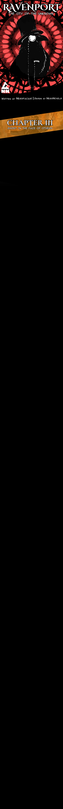

The night pressed heavily against the house, thick with
silence and the lingering weight of what they had done.
Jed and Amanda moved carefully through the hallway, their
steps slow and deliberate as they carried the body between
them. Every creak of the floor sounded louder than it should
have, as if the house itself disapproved of what they were
bringing inside.
They had grown efficient together — no words needed, no
hesitation. Their movements mirrored one another, practiced
and instinctive, as though they shared the same rhythm of
thought. Whatever fear had once existed between them had
been replaced by something colder: understanding.
Zeke’s door opened without a sound.
They slipped inside, lowering the anomaly onto the bed.
The sheets shifted under the weight, the figure lying
unnaturally still beneath the dim light spilling in from
the corridor. Amanda stood there for a moment longer than
necessary, staring. Earlier, the thing had terrified her —
its presence wrong in a way she couldn’t explain — but
after touching it, after feeling its strange stillness,
the fear had dulled. Not gone. Just… distant. Like a
memory that no longer belonged to her.
Jed gave a small nod and left without a word.
Amanda exhaled quietly. The room felt suffocating now that
the task was done.
*I should leave before Zeke starts asking questions.*
She turned toward the door, already reaching for the handle.
The door slammed shut before she could touch it.
Amanda froze.
Zeke stood there, leaning casually against the door,
smiling — not warmly, but with a calm that made her stomach
tighten. She avoided his eyes, focusing instead on the
floor, on anything that wasn’t him. Still, she could feel
his attention resting on her, patient and deliberate.
“I’d love it if you sat down,”Zeke said softly.
“Be comfortable.”
The words sounded polite, but something beneath them wasn’t.
Amanda moved slowly, perching on the edge of his study desk.
Behind her, she heard the quiet click of the lock turning.
The sound echoed louder than it should have.
Her pulse quickened.
*What is he doing? He thinks he can keep me here?*
“Amanda,” Zeke continued, walking closer, his tone
almost conversational. “I just remembered something.
I used to know this lovely cat. It was new to the place back
then… and so it was a very curious creature.”
He stopped a few steps away.
“The problem with curiosity,” he said, “is that
you end up where you shouldn’t be.”
Amanda’s fingers tightened against the edge of the desk.
“The cat ended up in the wrong place at the wrong time.”
Zeke reached into his pocket and pulled out a knife. The
metal caught the faint light, flashing once before settling
in his hand. He didn’t raise it. He didn’t need to.
"I’m sure you’ve noticed,” he continued calmly,
“what happens to people
who find themselves in the


.png)
.png)
.png)